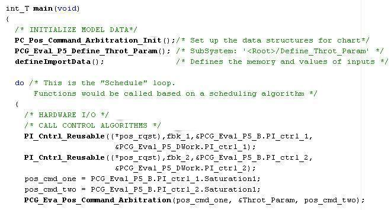
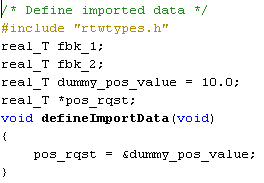
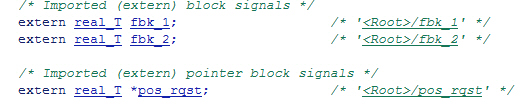
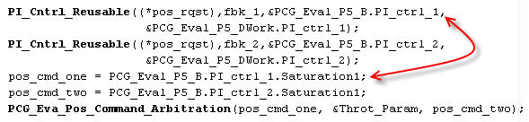

生成したコードを外部環境に統合
概要:必要なファイルと、生成したコードを呼び出すために使用するインターフェイスなど、外部ビルド プロセスの概要を紹介します。
所要時間: 45 分
目的
理解する内容は次のとおりです。
- Simulink® の外部でのビルドに必要なファイルの収集方法
- 外部変数および外部関数とのインターフェイス方法
目次
必要なデータおよびファイルのビルドと収集
<! Note:by adding my own "name" I control the link no matter what publish does>
Real-Time Workshop(R) によって生成されるコードは、MathWorks から提供されるサポート ファイルによって変わります。 生成コードを専用のビルド システムなどの別の開発環境に移動する場合は、必要なサポート ファイルも移動しなければなりません。 Real-Time Workshop packNGo ユーティリティを使用すると、自動的に必要なすべてのサポート ファイルを集めて zip ファイルにまとめることができます。 このユーティリティは、コード生成後のビルド プロセスをカスタマイズするための buildinfo_data 構造体などのツールと、実行可能イメージをビルドするのに必要なすべてのファイルを検索してまとめるための packNGo 関数を使用します。実行可能イメージには、[コンフィギュレーション パラメーター] ダイアログの [Real-Time Workshop]、[カスタム コード] ペインで定義する外部ファイルが含まれます。 ファイルは標準の zip ファイルにパッケージされています。 buildinfo MAT ファイルはディレクトリ model_ert_rtw に自動的に保存されます。
デモ モデルではコード生成後に自動的に packNGo を実行するよう設定されています。
zip ファイルを手動で生成するには、MATLAB コマンド ウィンドウで次のようにします。
- ファイル buildInfo.mat (サブディレクトリ rtwdemo_PCG_Eval_P5_ert_rtw 内) を読み込みます。
- コマンド packNGo(buildInfo) を入力します。
zip ファイルに含まれるファイルの数は、Real-Time Workshop Embedded Coder™ のバージョンと使用しているモデルの設定により変わります。zip ファイルに含まれるすべてのファイルがコンパイルに必要なわけではありません。コンパイルされた実行可能ファイルのサイズ (RAM/ROM) はリンクのプロセスによって変わります。必要なオブジェクト ファイルのみを含めてリンクするよう設定する必要があります。
背景:生成したコードを既存のシステムに統合
<! Note: by adding my own "name" I control the link no matter what publish does>
このモジュールでは、生成したコードを既存のコード ベースに統合するのに必要なタスクを説明します。この評価のために、Eclipse IDE と Cygwin/gcc コンパイラを使用します。必要な統合のタスクは、すべての統合環境に共通のものです。
背景:統合環境の概要
フル組み込みの制御システムは、ハードウェアとソフトウェアの複数のコンポーネントで構成されます。制御アルゴリズムは、コンポーネントの 1 タイプにすぎません。その他の標準タイプのコンポーネントには以下のものがあります。
- オペレーティング システム (OS)
- スケジュール レイヤー
- 物理的ハードウェア I/O
- 低レベル ハードウェア デバイス ドライバー
一般的に、Real-Time Workshop Embedded Coder はこれらのコンポーネント用のコードは生成しません。その代わり、これらのコンポーネントと接続するインターフェイスを生成します。MathWorks は一般的な組み込みコントローラー用のハードウェア インターフェイス ブロック ライブラリを提供します。たとえば、Target for Freescale™ MPC5xx、Target for Infineon C166®、および Target for TI C2000™用のブロック ライブラリを参照してください。
この評価用に、フル システムを作成する手順を示すためのファイルが用意されています。メイン ファイルは example_main.c です。これは単純なメイン関数で、コードを演習するのに必要な基本アクションを実行します。ただし、実際のアプリケーションのメインの例として意図したものではありません。

example_main.c の機能には以下のものが含まれています。
- 関数インターフェイスを定義する (関数プロトタイプ)
- データ定義に必要なファイルをインクルードする
- extern データを定義する
- データを初期化する
- シミュレートされるハードウェアを呼び出す
- アルゴリズム関数を呼び出す
example_main.c での関数実行順はサブシステムがテスト ハーネスと rtwdemo_PCG_Eval_P5.h で呼び出される順と一致しています。example_main.c での実行順を変更すると、実行可能イメージで作成される結果はシミュレーション結果と違ったものになります。
システム インターフェイスのマッチング
生成コードと既存のシステム コードの統合では、データ インターフェイスと関数インターフェイスの両方が一致していることが必要です。この例では、example_main.c ファイルは #includes と生成したコードからの関数呼び出しを介してデータを定義します。
データ インターフェイスのマッチング:入力データの仕様
システムには 3 つの入力信号、pos_rqst、fbk_1、fbk_2 があります。 2 つのフィードバック信号は ImportedExtern (グローバル変数参照)、位置信号は ImportedExternPointer (グローバル変数ポインター参照) です。信号が定義された方法により、Real-Time Workshop は信号用の変数を定義 (作成) しません。その代わり、MATLAB 環境外からの参照として信号変数を定義します。
デモ用に、ファイル defineImportedData.c が作成されています。このファイルは単純な C スタブで、信号変数を定義するのに使用します。生成したコードはファイル rtwdemo_PCG_Eval_P5_Private.h の extern 定義からデータにアクセスできます。実際のシステムでは、データは他のソフトウェア コンポーネントまたはハードウェア デバイスから取り込みます。
タスク: defineImportedData.c を表示します。

タスク: rtwdemo_PCG_Eval_P5_Private.h を表示します。

データ インターフェイスのマッチング:出力データの仕様
出力データに関してシステムが必要とするものはありません。しかし、ファイル rtwdemo_PCG_Eval_P5.h を参照すればデータにアクセスすることができます。
モジュール Testing the Generated Code は、出力データを標準ログファイルに保存する方法を示しています。
タスク: rtwdemo_PCG_Eval_P5.h を表示します。
データ インターフェイスのマッチング:付加的データへのアクセス
Real-Time Workshop Embedded Coder はコード生成のプロセス中にいくつかのデータ構造体を作成します。このデモでは、これらの構造体へのアクセスは必要ありませんでした。ユーザーがアクセスしたい一般的なデータ エレメントの例としては次のものがあります。
- ブロック状態値 (積分、伝達関数)
- ローカル パラメーター
- 時刻
次の表に一般的な Real-Time Workshop のデータ構造体をまとめてあります。モデルの設定により、これらの構造体のいくつかあるいは全部が生成したコードに現れることがあります。この例では、データはファイル rtwdemo_PCG_Eval_P5.h で宣言されています。
| データ型 | データの名前 | データの目的 |
| 定数 | model_cP | 定数パラメーター |
| 定数 | model_cB | 定数ブロック I/O |
| 出力 | model_U | ルートおよび Atomic サブシステム入力 |
| 出力 | model_Y | ルートおよび Atomic サブシステム出力 |
| 内部データ | model_B | ブロック出力の値 |
| 内部データ | model_D | 状態情報ベクトル |
| 内部データ | model_M | 時刻と他の システム レベルのデータ |
| 内部データ | model_Zero | ゼロクロッシング |
| パラメーター | model_P | パラメーター |
関数呼び出しインターフェイスのマッチング
Real-Time Workshop で生成された関数は、既定により void Func(void) インターフェイスを持っています。モデルまたは Atomic サブシステムが再入力可能なコードとして設定されている場合、Real-Time Workshop はより複雑な関数プロトタイプを作成します。以下に示すように、example_main 関数は正しい入力引数で関数を呼び出すように設定されています。

関数 PI_Cntrl_Reusable の呼び出しでは、ユーザー定義変数と Real-Time Workshop 構造体を組み合わせて使用します。構造体は rtwdemo_PCG_Eval_P5.h で定義されています。上記のコードでは構造体がユーザー定義変数にマップされるプロセスも示しています。
Eclipse 環境でのプロジェクトのビルド
このデモでは、組み込みシステムをビルドするために Eclipse IDE と Cygwin GCC デバッガーを使用します。両方のプログラムのインストール ファイルはこのデモの一部として提供されます。次の表にソフトウェア コンポーネントとバージョン番号をまとめてあります。
| ソフトウェア | バージョン番号 |
| Eclipse SDK | 3.2 |
| Eclipse CDT | 3.3 |
| Cygwin/GCC | 3.4.4-1 |
| Cygwin/GDB | 20060706-2 |
Eclipse および GCC のインストール方法および使用方法については、「Cygwin と Eclipse のインストールと使い方」を参照してください。
次の操作を行うと、このモジュールのファイルが自動的にインストールされます。
手動でファイルをインストールするには、以下を行います。
- ビルド ディレクトリ (Eclipse_Build_P5) を作成します。
- ファイル rtwdemo_PCG_Eval_P5.zip をビルド ディレクトリに解凍します。
- 以下のファイルは example_main.c. で置き換えられるために削除します。
- rtwdemo_PCG_Eval_P5.c
- ert_main.c
- rt_logging.c
メモ:モデルのコードが生成されないか、または zip ファイルが存在しない場合は、次のモジュールに進む前にモジュール「必要なデータとファイル」のステップを完了してください。
Eclipse デバッガーを使用すればステップごとに、生成した C コードの実行動作を評価することができます。「生成したコードのテスト」には、モデルの演習の例が入力データ付きで記載されています。